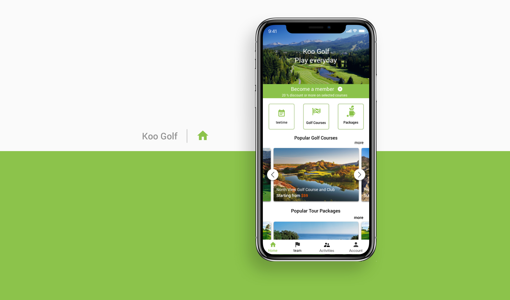

Burmeseboyyo
Home
Project
α
Project
β
Project
γ
Say Hi
Hi I am
AyeMin
, a Burmese-born & Vancouver-living
UI/UX designer
&
creative developer
. I create
brand identity
and build user-friendly
web & mobile digital products
that look unique and deliver great user experiences.
LET'S BE SOICAL ON:
